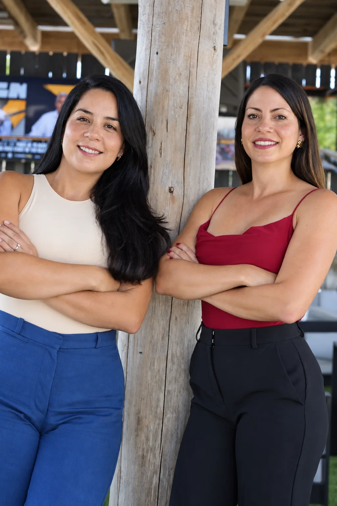

Reel · HospitalidadAbrir publicación ↗
Estudio creativo en Austin · De la estrategia a la producción
Ideas con dirección.
Contenido con emoción.
Compass ayuda a las marcas a encontrar la historia, definir el estilo y crear el trabajo: estrategia, identidad, redes, video y web.



Estrategia · Diseño · ProducciónHecho en Austin, compartido en todas partes


Somos
Compass Media
Una agencia creativa para todo el recorrido.
Estrategia, redes sociales, campañas pagas, identidad de marca, video y web, conectados por un equipo y una dirección clara.
Lo que hacemos
Convertimos las verdaderas fortalezas de una marca en historias que las personas pueden entender, contenido con el que quieren pasar tiempo y experiencias digitales que hacen que el siguiente paso parezca obvio.

EstrategiaIdentidad de marcaRedes socialesProducción de videoCampañas pagasExperiencias web


Marca y web
Posicionamiento, naming, identidad visual y sitios web que hacen que el negocio sea más fácil de reconocer, comprender y confiar.
Explorar servicios de marcaRedes y contenido
Estrategia, conceptos, gestión de canales y producción basados en historias útiles, no como relleno para el feed.
Explorar servicios socialesPublicidad y video
Creatividad de campaña, distribución paga y producción de video que funcionan en conjunto desde la primera idea hasta la optimización.
Explorar servicios de campañaCasos seleccionados
Los proyectos
Cada marca tiene su propio mundo visual. El objetivo no es repetir nuestro estilo, sino hacer que su historia sea inconfundible.

Kakao Productions
Identidad · Entretenimiento · Web


Las personas detrás del trabajo
Equipo pequeño.
Visión amplia.
Liderada por mujeres, bilingüe y nacida en Austin. Desde 2017, Compass ha ayudado a las empresas a conectar el pensamiento estratégico con la ejecución creativa práctica.
Conoce a CompassEs bueno saberlo
Preguntas frecuentes
¿Puede Compass gestionar la estrategia y la producción?
Sí. El equipo puede definir la dirección, construir la campaña o el sistema de contenido, producir el trabajo y respaldar la ejecución continua.
¿Trabajan con marcas ajenas a Austin?
Sí. Compass se asocia con marcas locales y nacionales mientras mantiene su base de operaciones en Austin, Texas.
¿Puedes crear contenido en inglés y español?
Sí. Compass es bilingüe y puede desarrollar comunicación y contenido de marca para audiencias de habla inglesa y española.
¿Podemos comenzar con un proyecto?
Absolutamente. Comience con una identidad de marca, una campaña, un video o un sitio web, o incorpore a Compass como socio creativo continuo.